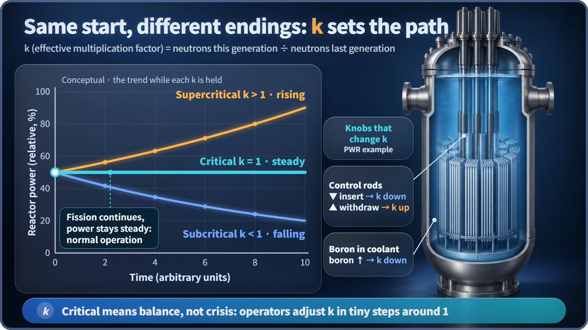
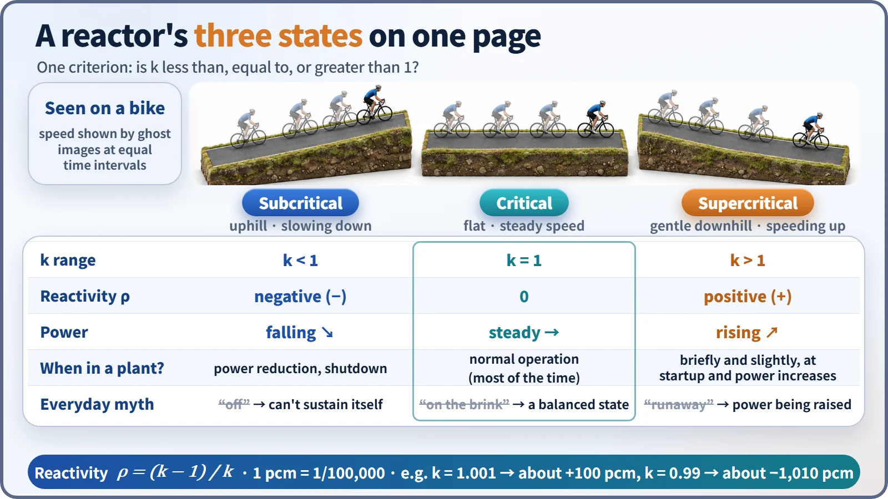

Nuclear Reactions & Fission · 034
Pedaling on Flat Ground — Critical, Subcritical and Supercritical: A Reactor's Three States
In a reactor, critical means balance, not crisis: power holds steady whenever the multiplication factor k equals 1.
Subcritical, critical and supercritical describe one thing: whether the multiplication factor k is less than, equal to or greater than 1. Critical (k = 1) is not a crisis but a balance in which power holds steady, which is how a power reactor spends almost all of its operating time. [1]
"The reactor has gone critical"
In everyday English, "critical" almost always signals trouble: a patient in critical condition, a situation reaching a critical point. Yet when operators in a nuclear plant's control room hear "the reactor has gone critical," they relax. It means the reactor has started running just as planned. A bicycle explains why.
Same pedaling, different road, different speed
Imagine pushing the pedals with exactly the same effort while only the road changes. Uphill, you lose more than your pedaling puts in, so the bike gradually slows. On the flat, your pedaling exactly makes up for the losses, so the speed holds. On a gentle downhill, the slope adds to your pedaling, so the bike slowly picks up speed.
The bicycle's speed is the reactor's power, and the slope of the road is the multiplication factor k (strictly, the effective multiplication factor). In a chain reaction, neutrons from one fission cause the next, generation after generation, and k is the number of neutrons in this generation divided by the number in the previous one, after every loss to leakage from the reactor and absorption by materials other than fuel. What matters is not the speed but how it is changing. [2]
Three names, one criterion
| State | k | Neutrons per generation | Power | Bicycle |
|---|---|---|---|---|
| Subcritical | k < 1 | Shrinking; the chain can't sustain itself | Falling | Uphill |
| Critical | k = 1 | Constant; the chain sustains itself | Steady | Flat ground |
| Supercritical | k > 1 | Growing | Rising | Downhill |

Being critical has nothing to do with how high the power is. A reactor holding steady at 30% power is critical, and so is one holding steady at 100% rated power, just as riding on flat ground at 10 km/h or 20 km/h are both "holding speed." While a plant generates electricity steadily all day, the reactor is almost always critical.
Don't be alarmed by "supercritical"
To start up a reactor or raise its power, operators make k just slightly larger than 1; as power nears its target, they set k back to 1. Supercritical simply means "power is rising right now," a normal operating maneuver. Subcritical is the state when power is being reduced or the reactor is shut down, and a shut-down reactor is deliberately kept well subcritical, with cooling continuing for the decay heat of fission products. Subcritical does not mean zero neutrons, either: with a neutron source in the core, the neutron count settles at a low level, like a bike pedaled uphill that slows gradually rather than stopping dead. [3]
The "supercritical power plants" in the news use supercritical water, taken above about 374 °C and 22.1 MPa: a thermodynamics term with no relation to today's topic. And nuclear plant fuel is low-enriched, with only about 3 to 5% uranium-235, so going supercritical does not make it explode like an atomic bomb.
"How much" greater than 1: reactivity and pcm
In real operation, k moves very close to 1, at values like 1.001 or 0.999, so engineers use reactivity:
ρ = (k − 1) / k
ρ is 0 when k is 1, negative when k is below 1 and positive above 1, like describing a road's slope in degrees. Because the values are tiny, they are expressed in pcm (per cent mille, one part in 100,000; 1 pcm = 0.001%). For example, k = 1.001 gives ρ ≈ +100 pcm, and k = 0.99 gives ρ ≈ −1,010 pcm. The reactivity added to raise power is usually only tens to hundreds of pcm, and because some neutrons are born a little late, power changes unfold over minutes, leaving people plenty of time to watch and adjust. [4]
The operator's gears and brakes
In a pressurized water reactor, k is changed with two main tools. Control rods are made of material that soaks up neutrons: inserting them into the core from above lowers k, withdrawing them raises it, and they act as a fast brake. Boron is dissolved in the cooling water as boric acid: a higher concentration slowly lowers k, a lower one slowly raises it, like shifting gears on a long hill. In addition, when power rises the fuel and coolant temperatures rise and k naturally drops a little, helping the reactor settle back onto flat ground.

Key takeaways
"The reactor has gone critical" means "the bike has reached flat ground and is cruising at a steady speed." Critical is the name of a balance, not a crisis: subcritical means power falling, critical means power holding and supercritical means power rising, and operators move between them in tiny steps with control rods and boron.